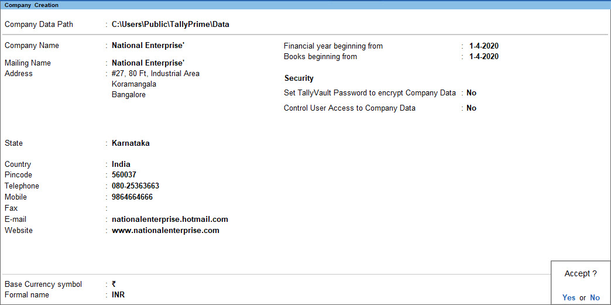
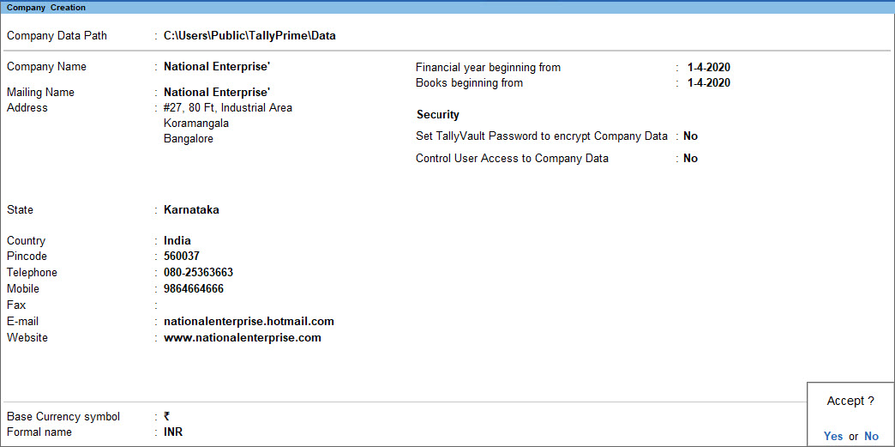

2 Fundamentals: Company Creation
This chapter explains the basic steps for creating and maintaining a company in Tally Prime, including company details, statutory information (GST, TDS, TCS), and account management.
2.1 Creating a Company
2.1.1 Steps
- Open Tally Prime.
- From the Gateway of Tally, select Create Company.
- Enter the following details carefully:
| Field | Description |
|---|---|
| Directory | Folder path where company data will be stored. |
| Name | Legal name of the company (e.g., ABC Traders Pvt. Ltd.). |
| Mailing Name | Can be same as the company name or a trade name. |
| Address | Full postal address. |
| Country and State | Choose correct location for GST and statutory compliance. |
| Pincode | Optional but recommended. |
| Telephone / Mobile / Email / Website | Contact details for invoices and reports. |
2.1.2 Example
Name: RK Enterprises
Mailing Name: RK Enterprises
Address: No. 12, Main Road, Chennai – 600001
Country: India
State: Tamil Nadu
Email: info@rkenterprises.in

 



 >Figure: Company Creation screen in TallyPrime – entering name, address, mailing name, books-beginning date, currency symbol.
>Figure: Company Creation screen in TallyPrime – entering name, address, mailing name, books-beginning date, currency symbol.